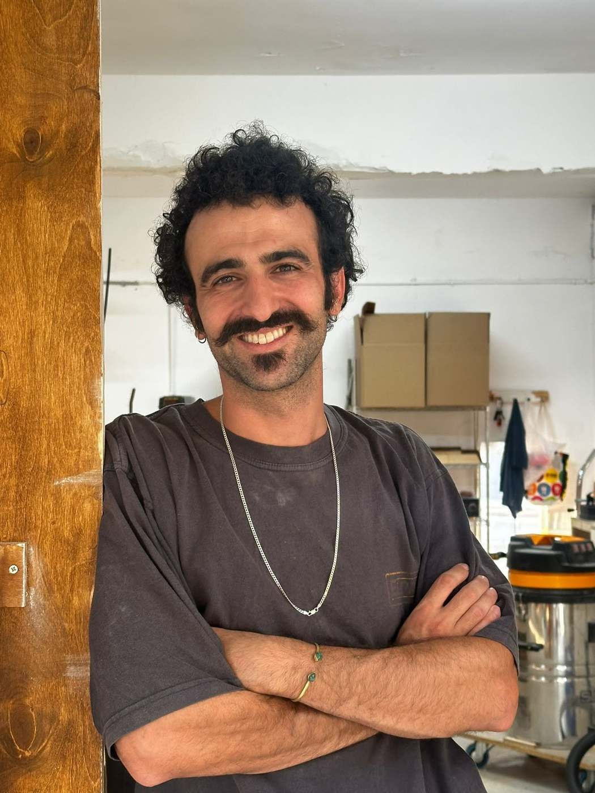

חומר · צורה · זמן
עיצוב רהיטים ואובייקטים · חומרים בשימוש חוזר · תל אביב
גלול
חומר · צורה · זמן
עיצוב רהיטים ואובייקטים · חומרים בשימוש חוזר · תל אביב

נעים מאוד - דניאל ניסים, הנדסאי אדריכלות ועיצוב פנים. מעצב ויוצר רהיטים מחומרים בשימוש חוזר.
אני בוחר לעבוד עם מה שכבר קיים סביבנו - מתוך הערכה עמוקה לחומרי הגלם, ולסיפורים שהחפצים האלה נושאים איתם.
הסטודיו פועל מתוך חיפוש מתמיד אחר החיבור שבין עבר להווה, ישן לחדש, שימושי ואסתטי. החומרים מגיעים מרחובות העיר - משקופים ישנים, חלקי מתכת, פסולת מפעלים, ורהיטים שלמים שנמצאו בימי גזם. כל פריט עובר תהליך של פירוק, הקשבה והרכבה מחדש - ללא שרטוטים. הצורה נוצרת מתוך החומר, מתוך הפגמים, מתוך מה שכבר היה.
התוצאה היא שכל יצירה היא חד פעמית - One of a kind.


 לפני
לפני
ליין קונספטואלי שנוצר עקב ריבוי של כיסאות מחשב ישנים שפגשתי ברחוב והרצון העמוק שלי לשלב בדים ביצירה שלי. כיסאות מחשב ישנים, ששימשו שעות עבודה אינסופיות - מתגלגלים לכורסאות רכות, חד-פעמיות, שנולדו מחיבורים לא צפויים.
קומפיוצ'ר 1.0 המוצג בתמונות מורכב מכיסא מחשב וכיסאות גן מעץ טיק שנאספו מהרחוב. הכיסא רופד מחדש וכיסאות הגן פורקו והורכבו מחדש כשלד הכורסא וההדום החדשים.


 לפני
לפני
פח טינר ישן קיבל חיים חדשים. אחרי ליטוש שחשף את המתכת והאיץ תהליך טבעי של החלדה, הוא הפך לבסיס בעל מראה גולמי ועוצמתי. מעליו הוספתי פלטת עץ עגולה, מצופה בטון עם טקסטורת שבבי עץ, שיוצרת ניגוד מעניין בין תעשייתי לטבעי, בין מחוספס לאסתטי.


 לפני
לפני
הכיסא שחלם להיות ספסל. את הכיסא הזה מצאתי ביום גזם ליד הבית שלי וישר זיהיתי את הפוטנציאל שבו. פירקתי אותו לגורמים, כל חלק עבר חידוש יסודי. כל חלקי הכיסא נשמרו בצורתם המקורית והורכבו לספסל אחד יחיד ומיוחד במינו.


 לפני
לפני
ליין קונספטואלי שנוצר עקב המון פסולת של כיסאות שאספתי מהרחוב. הרעיון הוא לקחת את הכיסא הישן, לחצות אותו במרכז ולהרחיב לספסל מרגש. ההרחבה נוצרת תוך כדי שימוש בחומרים בשימוש חוזר.
הספסל הזה הוא השלישי בסדרה של הכיסאות המורחבים והוא משלב בתוכו חומרים קסומים. משענת הגב היא לייסט של חבית יין ישנה. שני הקורות שקושרות בין שני חצאי הכיסא הישן הן קורות של אורן קליר שנפרסו ממשקוף ישן. המשטח מרוצף בפנלים שנאגרו עם השנים במחסן של סבא שלי, שהוא קבלן בניין לשעבר.


 לפני
לפני
חמש זרועות ניקל, פעם בסיס לכיסא מחשב, עכשיו נושאות עליהן סיפור חדש. על גבי השלד המתכתי שולבו יחד עץ טיק משולחן ישן, פח חלוד עם טקסטורה עשירה, ומשקוף עץ. כל חומר מביא איתו זיכרון, וכל קו ופגם מספרים סיפור של גלגול וצמיחה.


 לפני
לפני
 לפני
לפני
ליין קונספטואלי שנולד מתוך ניסיון לניצול מקסימלי של מכלי אבקות חלבון לאחר סיומם. אני בעצם משתמש במיכל אבקת החלבון כתבנית ליציקת בטון ובשילוב עם חומרים בשימוש חוזר יוצר שולחן צד.
בתמונות מוצגים לפניכם הרביעי והחמישי בסדרה. בטון חלבון 4.0 - שילבתי בתוך יציקת הבטון קורת משקוף דלת ישנה, המשטח העליון הוא שארית של אורן פיני מבנייה של פרגולה שעליו מחובר פח ישן וחלוד. בטון חלבון 5.0 - שילבתי בתוך יציקת הבטון רגל של שידה ישנה שאספתי מהרחוב, המשטח העליון הוא שארית של עץ אשא.


 לפני
לפני
את השולחן הזה מצאתי בתחילת דרכי. זו בעצם היצירה הראשונה שדרכה גליתי את המתנה שלי - לפרק ולהרכיב מחדש. השכנים שלי זרקו אותו ביום גזם וברגע שראיתי אותו, לא חשבתי פעמיים.
מדובר בשולחן גינה סטנדרטי מעץ טיק. פירקתי את השולחן לגורמים, ממש כמו לגו והתחלתי להרכיב אותו מחדש כספסל מרגש. כל חלקי הספסל הם חלקיו המקוריים של השולחן, כולל הפרזולים, המגרעות והשגמים.
אני מזמין אתכם להיכנס לעולם שלי.
בואו לקבל טעימה קטנה מבית המלאכה, מהיצירה עם חומרים בשימוש חוזר, מעבודה אינטואיטיבית עם הידיים והלב.
מניחים את הטלפון ואת רעש החיים בצד לכמה שעות ומגיעים ליצור משהו משלכם.

הסטודיו פועל מתוך חיפוש מתמיד אחר החיבור שבין עבר להווה, ישן לחדש, שימושי ואסתטי.
אני מציע עיצוב רהיטים ייחודיים לפי הזמנה אישית - כל פריט מותאם לחלל, לסיפור ולחומרים שנמצאו. ניתן לגשת עם בקשה ספציפית, או להגיע לסטודיו ולראות מה קיים.
כל יצירה יוצאת עם תיעוד מאיפה הגיע החומר ומה הייתה הכוונה מאחורי הצורה. היצירה ממשיכה לשאת את הסיפור.
צור קשר
אני עובד על פרויקטים בודדים בכל פעם, ומקבל הזמנות חדשות בקצב איטי ומכוון.
מוזמנים ליצור קשר.